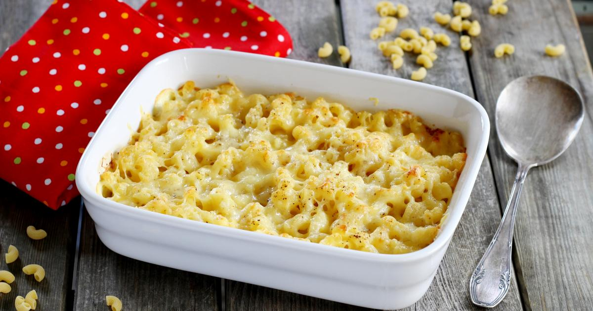

Pasta gratin

Description
An meal of cooked pasta with cheese
Ingredients
- 400g of Penne rigate
- A bunch of parsley
- Oil
- One or 2 goat cheese
- 1 egg
- emmental cheese
- salt
- pepper
- An half liter of water
Steps
- Cook the pasta, salting the water, then drain and leave to cool
- Cut and chop the parsley, fry in a little oil. Add the pasta once cooled then the goat cheese cheese and mix
- Add the egg, salt, pepper and mix again
- Put the preparation in a gratin dish, add half a liter of water, sprinkle with grated Emmental and bake for about 35 minutes at 180 degrees